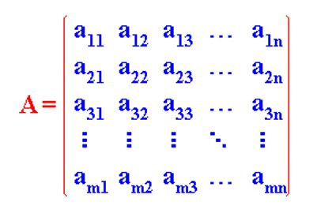

Las matrices son estructuras bidimensionales que consisten en filas y columnas de elementos numéricos. Son ampliamente utilizadas en matemáticas, física, ingeniería y ciencias de la computación para representar y manipular datos.
Si quieres profundizar más respecto a la matrices te recomiento que veas el material que se presenta a continuación: